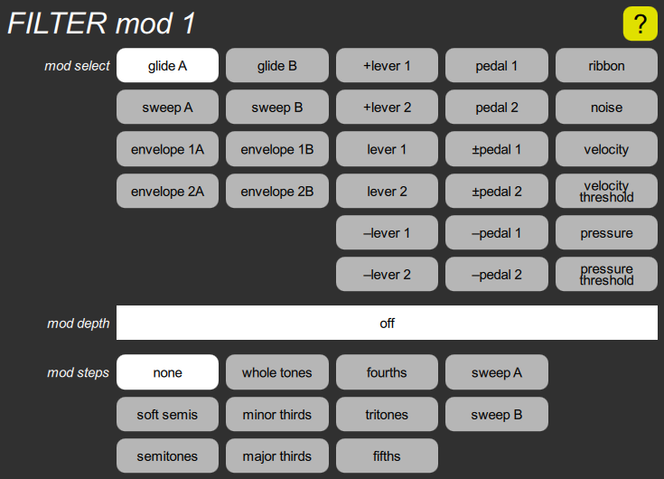

FILTER mod1 cluster

This contains a standard mod select parameter and a corresponding mod depth slider. However, unlike the other four mod inputs, this one also includes a mod steps parameter, to either introduce quantizing to the modulation, or to sample it by a sweep.